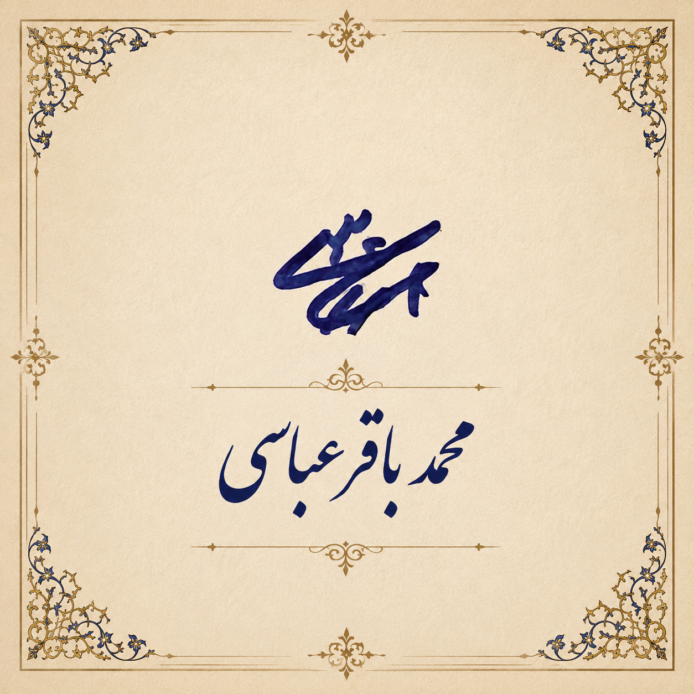
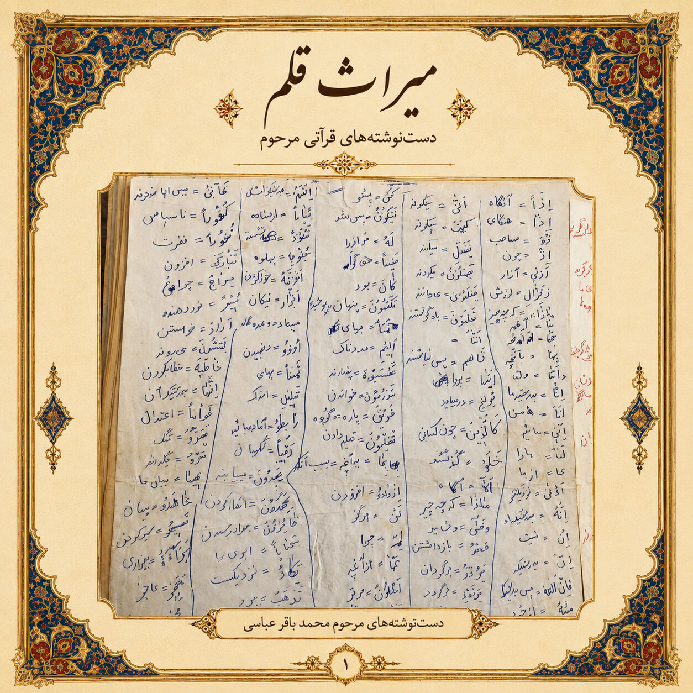

✍️ امضا
امضای زندهیاد محمدباقر عباسی، یادگاری ارزشمند از دستخط و هویت ایشان که برای خانواده خاطرهانگیز است.

⌚ ساعت مچی
ساعتی که سالها همراه ایشان بود و امروز یادآور نظم، مسئولیتپذیری و حضور همیشگی ایشان در کنار خانواده است.

📝 دستخط
نمونهای از دستخط ایشان؛ یادگاری که با دیدنش، خاطرات و لحظههای شیرین زندگی دوباره در ذهن خانواده زنده میشود.